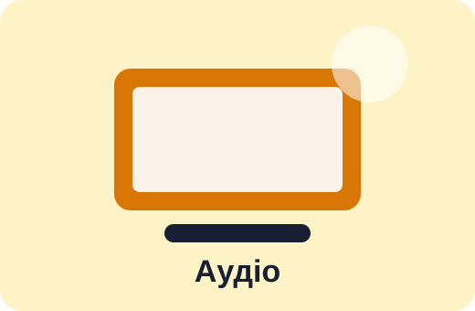

Популярні товари TechStore
| Назва товару | Опис | Ціна |
|---|---|---|
| Apple MacBook Air 13 M2 8/256 GB | Легкий ноутбук для навчання, роботи та поїздок | 39 999 грн |
| Lenovo IdeaPad Slim 3 15AMN8 16/512 GB | Універсальний ноутбук для офісу, навчання та щоденних задач | 24 999 грн |
| ASUS Vivobook 15 X1504VA i5/16/512 GB | Ноутбук із 15,6-дюймовим екраном для роботи з документами та мультимедіа | 29 999 грн |
| Samsung Galaxy A55 5G 8/256 GB | Смартфон із AMOLED-екраном, NFC та підтримкою 5G | 18 999 грн |
| Xiaomi Redmi Note 13 Pro 8/256 GB | Смартфон із великим екраном і швидкою зарядкою | 12 999 грн |
| Apple AirPods 4 | Бездротові навушники для музики, дзвінків і відеоконференцій | 7 499 грн |
| Logitech Signature M650 Wireless | Бездротова миша для офісної роботи та ноутбука | 1 699 грн |
| Kingston DataTraveler Exodia 128 GB | USB-накопичувач для зберігання документів і резервних копій | 399 грн |
Категорії
- ноутбуки та ультрабуки;
- смартфони;
- навушники та аудіотехніка;
- периферія й аксесуари;
- накопичувачі даних.
Галерея товарів

